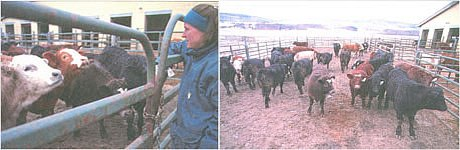
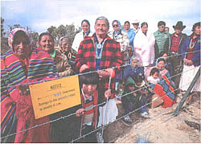
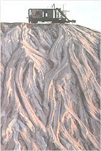
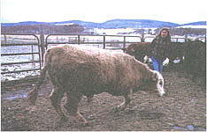

COUNTRY VET
Consider behavior traits when moving livestock.
An inevitable aspect of raising livestock is the pattern of relocating them from the farm to a market, to a fair, or to another farm and back again. The two critical considerations in livestock transport are the safety of the handler/owner and the safety of the animals. Knowledge of animal behavior and of how animals respond to humans will reduce stress and ensure the safety of both handler and animals.
A brief review of the basics of livestock behavior will help handlers better work with their animals and better understand the impulses behind their actions. Cattle possess a wide panoramic visual field - up to 340° in some breeds - and have the ability to see color.
Cattle display body language, and a working knowledge of these subtle signals is important. Healthy calves and cattle give a luxurious stretch upon rising from a laying down position and then relax to a normal posture. Increased standing or frequent shifting of weight between feet is a sign of discomfort or discontent.
The most reliable clue to a cow's condition is to observe its tail. The tail will hang loosely straight down when the cow is grazing, walking calmly, or relaxed but will be clamped down between the legs when cold, frightened, or sick. When the tail is held away from the body the cow feels threatened or is investigating. A galloping cow will hold her tail straight out from her body; when there is a kink in the tail, she is in a playful mood.
Cattle respect a solid fence and seldom ram or attempt to run through a solid barrier, unless very upset. Excited cattle often run through a fence because they are unable to see it. Place ribbons on the cables or wires to increase visibility. Behaviors that indicate discomfort for cattle include attempting to escape, vocalizing, or kicking.
When moving cattle, and to a lesser extent sheep, it is important to understand the concept of flight zone and point of balance. The flight zone is the animal's personal space. The closeness of a human that animals will tolerate depends on their tameness or wildness. Frequent gentle handling will slowly decrease the flight zone. To determine the flight zone, slowly approach a group of animals. When the handler is outside of the flight zone, the animals will turn and face a handler at a safe distance. When the handler enters the flight zone, the animals will turn away. Penetrate the flight zone too deeply and the animal will bolt, or turn and run past you. The best place to work an animal or group of animals is at the edge of the flight zone.
The point of balance, at the animal's shoulder, is used to change direction. To make an animal move forward, the handler should stand at the edge of the flight zone behind the point of balance. A few simple steps to the front of the point of balance will cause the animal to stop and back up. If an animal is approached head on, it will turn left if the handler moves to the right and vice versa. The flight zone is increased when an animal is approached head on. It is a frequent mistake for handlers to stand in front of the point of balance and prod the animals forward. Remembering to work the edge of the flight zone and utilize the point of balance will ensure calm and successful movement.
Sheep behavior can be summarized in three words: flocking, following, and vision. Sheep aggregate to form flocks and they maintain social spacing and orientation even when confined in pens. Standing sheep will orient themselves parallel to and facing the same direction as the nearest neighbor. While laying down, sheep position themselves parallel to and next to the sides of open-sided pens.
Because of the social structure present within a flock, sheep are able to form stable relationships which have an important impact on their handling. When an individual animal is separated from the group, it will run towards the receding flock regardless of the position of the handler. As a prey species, sheep respond to the sight of a predator by flocking and flight. The flight zone is not affected by flock size or the speed of approach of the predator.
Individual sheep tend to possess a larger flight zone than a flock. The "following" response of sheep is present at birth and continues throughout the adult life of a sheep. In addition to following, you will see mutual imitation of behavior: sheep feed, drink, rest, and ruminate all at the same time.
But leadership also exists within a flock. These individual sheep do not have presidential aspirations, but move independently of other sheep and are therefore followed, setting the pace for the rest of the flock. Sheep possess a panoramic visual field similar to cattle and also have good depth perception and the ability to distinguish colors. Sheep vocalize regularly only in three situations: separation from the flock, ewe-lamb communication, and ram to ewe during mating.
An individual's response to a handler is a combination of the animal's previous experiences and temperament. Both determine the degree of fear when handled or transported. It is best to start early with cattle and train weaner calves to become accustomed to humans. Walking quietly among calves in the pens or corrals over ten days will acclimate the young animals to the handler's presence. Cattle and sheep have the ability to remember unpleasant experiences for twelve weeks to one year. It is important to remember that few animals are handled only once in their lifetime. Always treat livestock gently and calmly.
As prey species, livestock have a great fear of novelty. Any unfamiliar condition will cause animals to balk and halt their forward motion. Solid chutes and gates are most effective when moving animals because they hide any distractions outside and reduce wide-angle vision. Cattle, sheep, and horses will balk at puddles, shadows, changes in floor texture, and moving objects such as humans, hanging coats, or swinging chains.
Following pigs from behind with a solid panel prevents the pigs from backing up. Moving livestock towards an area with better illumination enhances forward flow; all livestock are reluctant to enter a darker area. Domestic animals are social and prefer to remain in herds or flocks. The idea of safety in numbers is as ancient as time itself.
Because of this herding tendency, it is easier to move a group of animals rather than individuals. When animals are separated they get excited and agitated and are more likely to injure themselves and the handlers. Many of the serious cattle handling accidents are due to a lone animal that goes berserk when separated from its group and attempts to rejoin its cohorts.
When moving animals, it is best to keep existing groups together. If a group is too large, it can be divided, but avoid combining animals that are strangers as it can stimulate aggressive and dominant behavior which is stressful to the animals and potentially hazardous to the handler.
Cattle and sheep prefer to maintain visual contact with others in the group. Livestock will follow a leader and maintain visual and tactile proximity with cohorts when moving. Because of this, if the lead animal is to balk at some unknown object, the handler should identify the source of fear, remove it, and attempt to move the group by moving the leader. It will cause anxiety, as well as unnecessary crowding and bunching if the handler attempts to move the animals from the rear of the group.
Transport of livestock involves many inherent stresses for animals, but we can decrease these. When animals are accustomed to people, they are calmer. Because isolation is highly stressful for animals, try to avoid moving animals individually whenever possible. Stress has been shown to decrease immune function which increases the susceptibility to infections. This creates a risk for an animal moved to a new environment where it may be exposed to animals carrying strains of viruses and bacteria not previously encountered. Stress also decreases rumen motility in cattle which leads to mild indigestion and decreases the production of milk cows and the growth of beef cattle.
Packing density of the animals, an adequate trailer, and driving technique are also important considerations. When loaded, sheep and cattle should be able to stand in a natural position with the roof well above their heads. There are two theories behind packing density on a trailer. One is to pack the animals so tight they can't move or breathe. The other is to leave them plenty of room to move about. A happy medium between these two extremes is ideal.
Cattle behavior during motion is predictable: they stand perpendicular or parallel to the direction of motion and tend not to lay down. Loss of balance is the biggest physical danger during transport - aside from heat or cold stress - and occurs during braking, gear changing, and cornering. Smooth travel is the ideal; highways provide the fewest interruptions during the trip. The trailer should have a no-slip floor and adequate ventilation to allow dissipation of body heat.
Here's hoping that you and all your animals arrive at their final destination safe, healthy, and unstressed.
Happy Trails!
|
 About ten Navajo families are refusing orders to evacuate their homes. |
 Uranium tailings from a Peabody mine on Hopi land in Blue Lake, NM. |
 |
|
 |
|
|